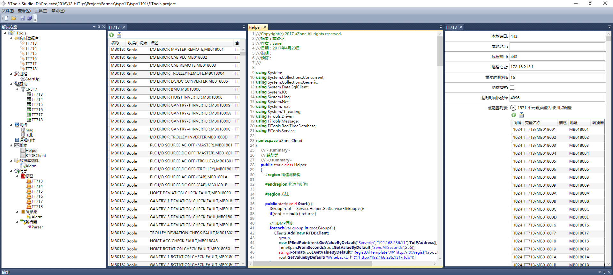
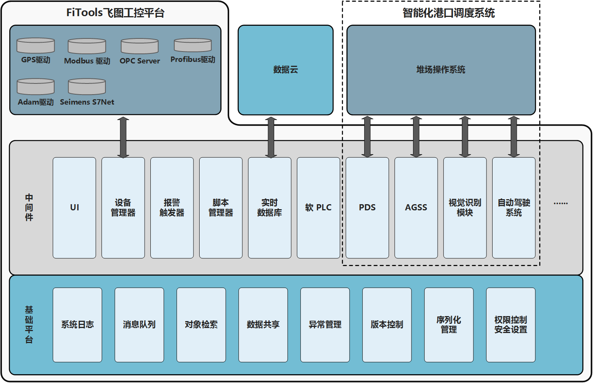
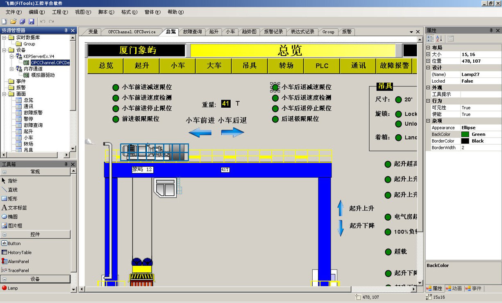

飞图 (FiTools) 工控平台软件
飞图工控平台软件 (FiTools) 是一款跨平台（Windows/Linux）工业控制平台软件。
- 跨平台，可同时运行于 Windows7 以上版本和 Linux 所有主流发行版上。支持 64 位 /32 位 /arm 等多种 CPU。
- 基于插件式的设计，提供强大的二次开发功能，可自定义功能插件，并且完美支持 C#、VB.Net 等脚本语言。
- 性能优异，支持多任务，多线程
- 持 OPC、Modbus、Memobus、西门子、富士等多种设备与协议的通讯。
- 支持所有主流商业数据库如 SqlServer/Oracle/Access 或主流开源数据库如 MySql/PostgreSql/Sqlite 等。
- 自带 Web 服务器，与我司的前端开发库配合，可方便的实现 Web 访问，并实现手机 / 平板电脑等多种设备的响应式界面访问。
- 支持所有主流商业数据库如 SqlServer/Oracle/Access 或主流开源数据库如 MySql/PostgreSql/Sqlite 等。
- 异常强大的历史数据记录功能，以自定义的超高压缩比数据记录文件格式记录所有变量的变化。在通常的桌面工作站上，支持 10000 个变量每秒 10 次变化的实时记录。
- 只要设备可以联网，并与我司的设备云配合，即可方便的实现互联网的 Web 访问，并可将数据同步到我司的数据云上。
- 多台同时安装工控平台软件的设备可轻松实现数据同步、双机热备、多机冗余等功能。


